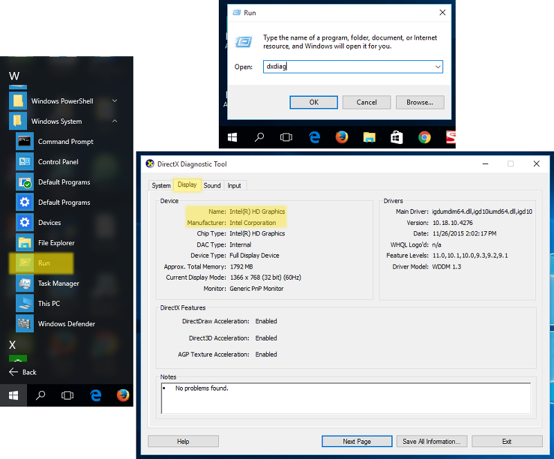

存在的问题及解决方案¶
WebGL 仍然是一个相对较新的技术，可能与软件和硬件的各种组合下不完全正常工作。本章介绍了Blend4Web引擎的用户可能会遇到的问题，并提供了解决这些问题的常见问题。
WebGL的支持¶
如果您使用的是台式机或笔记本电脑，您的系统必须有一个支持的DirectX 9.0c和OpenGL 2.1的GPU，如：
的Nvidia GeForce 6XXX系列或更高。
AMD / ATI的Radeon R500（X1xxx）系列或更高。
英特尔GMA 950或更高。
如果您使用的是移动设备上的WebGL，请检查您的设备是否是 兼容性列表。
您还需要有支持WebGL技术的Web浏览器。
下面的Web浏览器支持WebGL：
谷歌浏览器（诉9或更高版本）
Mozilla Firefox浏览器（V 4.0或更高版本）
Safari浏览器（8.0版或更高版本）
Android版Chrome浏览（25节或更高版本）
Internet Explorer（11或更高版本）
- Microsoft Edge
Opera (v. 12 或更高版本)
UC Browser (实验性)
Yandex 浏览器
我们也建议使用的最近的web浏览器的版本，以避免兼容性问题。
启动时的问题¶
1. “浏览器无法初始化 WebGL” 消息显示.

请按照 WebGL的无法初始化 章节列出的说明.
2. 用户界面和背景显示但是默认场景没有渲染出来。同时 * http://get.webgl.org/ * 网站和其他 WebGL 应用正常工作.
可能的原因：
该引擎尝试加载移动或删除的资源文件。
您正在使用旧版本的视频驱动程序。
您正在使用不完全支持WebGL的开源驱动。
对于Linux用户 - 由于目前的开源驱动程序不完整的OpenGL实现，建议使用Nvidia和AMD显卡的专用的驱动程序最新版本。
您正在使用过时的操作系统，如Windows XP。
浏览器没有设置加载本地资源。在这种情况下，这个问题可以通过使用本地网络服务器 是固定的。请参阅 加载本地资源 部分。
WebGL的无法初始化¶
使用最近的Chrome或Firefox浏览 http://get.webgl.org/ 页时出现的问题。我能做什么？
安装最新的更新，为您的系统（用于MS Windows看 指南)。在微软Windows的情况下安装最新的DirectX 运行 。重启。
建议及时更新显卡驱动程序。要检测你的显卡和它的供应商，请输入 about:gpu (或 chrome://gpu) ，在Chrome浏览器的地址栏中...

或Firefox ...

对于Windows，您可以运行DirectX诊断工具叫 dxdiag.
要做到这一点，请按照下列步骤操作：

从开始菜单中选择
Run命令类型输入 dxdiag 给
Open字段，然后按Enter打开DirectX诊断工具打开
Display面板。在那里，你可以找到制造商，型号以及关于你的显卡的其他信息。
{kind=link}
适用于macOS，你可以检查系统报告。
要做到这一点，请按照下列步骤操作：
从
Apple菜单中选择关于本Mac。点击
系统Report按钮。在
Hardware部分中选择显卡/ Displays。

下载驱动程序从相应的支持中心（例如 Intel, Nvidia, AMD/ATI）。安装驱动程序后，重新启动系统。
如果上述措施没有帮助初始化渲染（或者没办法更新系统）尝试改变浏览器设置。
对于Chrome：
输入 about:flags （或者 chrome://flags）到浏览器的地址栏中，单击 Enable 下 Override software rendering list 选项，并重启浏览器。

对于Firefox：
输入 about:config 到浏览器的地址栏，搜索 webgl.force-enabled 参数，并在其上双击从 false 切换到值为 True 。

对于Safari浏览器
选择 Preferences 从Safari浏览器菜单中选择 Security 选项卡，并确保 允许WebGL 复选框被启用。

已知问题¶
更新插件时候的问题。
强烈建议安装插件/ SDK的新版本后重新启动Blender。
NVIDIA驱动程序331在Linux中可引起WebGL的错误。
在一些平台上的改变纹理过滤。
在ipad和IE浏览器上屏蔽了一个不正确的纹理滤镜，为了让材质带alpha clip类型的透明类型。
使用Mali GPU的有些设备需要在浏览器设置手动激活的WebGL。
对于本地开发服务器在苹果 macOS 和Blender2.76时，您可能需要安装 Python 3.4. 这是由于在Blender https://developer.blender.org/T46623 的错误。此错误已在Blender2.76b修复，所以建议更新Blender。
使用Nouveau 驱动时骨骼动画可能工作不正确。
透明纹理可能不能够在IE11和微软Edge Web浏览器和iPad上正确显示。
问题是关于 transparent materials. 图像错误在alpha通道值接近或等于零的区域中可见。要解决这个问题，建议增加Alpha通道的值，直到错误不再可见（按价值0.01增加它0.05应足以在大多数情况下）。
WebGL的Linux上的Chromium 崩溃 NVIDIA GeForce 400/500系列GPU与驱动迟于355。
此问题是由Chromium沙箱和NVIDIA最新的驱动程序不兼容引起的。解决的办法是降级驱动到340xx版本。
音频问题。
音频不会在谷歌浏览器的某些版本的HTML导出的情况下， “背景音乐”的扬声器不工作。目前，音箱类型将自动更改为“背景声音”作为一种解决方法。
运行过多实例的情况下（> 6），当有音频方面的错误B4W引擎（例如，许多浏览器选项卡或在一个页面上的许多内部框架），谷歌浏览器。通过禁用一个应用程序的音频如果音频上下文不能为它创建防止错误。
暂停音频可能无法在谷歌浏览器版本50-52 Nexus 6和9的Nexus这样的移动设备上工作。它应该在Chrome53工作，了解详情： https://bugs.chromium.org/p/chromium/issues/detail?id=616772 。
QQ浏览器不会在此刻支持WebGL。
WebGL是不稳定，有时会在Linux的Mesa11.x的驱动程序与英特尔的GPU上崩溃。降级到Mesa10.x的驱动程序可能会有帮助。
有关在VR模式上GearVR触摸传感器上移动手指的信息不可用。
三星的Internet浏览器不在VR模式的触摸传感器上不触发任何移动手指的任何事件。
由放置在无效（隐藏）层粒子系统发射的粒子可以有自己的位置设为零，作为非活性层不被Blender更新。
这个问题可以通过导出一个场景之前或通过简单地点击层激活层以使Blender更新它们来解决。
Mali 400系列的GPU上谷歌Chrome浏览器渲染Alpha混合物体不正确。
Using several application instances in a single page can lead to excessive memory usage or even a tab crash in Chrome 59. However, this is fixed in Chrome 60.